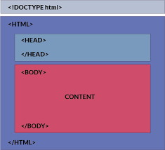

My website contains 4 HTML pages with 1 CSS file. They are all inside the same directory, websystems
and all photos are stored inside photo directory, which is also inside the websystems. All pages can be
accessed through the ancher tags, which are located on top centre.
I also structured my website to be able to see exactly the same from any devices. This is because I put
everything inside the border, with the width of 800px, so that all devices are compatiable to view without
anything getting cut off.
I also used hover function, so that when you hover over between pages, the color of the text changes to grey.
I made a "Back to Top" button for the viewers to be able to easily go back to the top of the page.
I utilised a lot of private classes to decorate the parts that are inside the same class individually.
Below is the structure that I used for my website. It is done like below because it makes it easier to
make any changes visually, and also to debug without struggling.

Asthstetics
I tried to keep my website design as simple as possible. By having multiple colours,
it sometimes attracts people to stay on the website, however it can distrub them from looking at the
contents.
By setting it up with default colours such as grey and white, I can avoid any of possible distrubtions.
The font of the website is equalised besides footer, to maintain the consistency.
This is done for the font size, which all title font sizes are the same, same for the subtitles and body texts.
Accessibility
My website is suitable for anyone, and works for all devices. It can be viewed using any devices
they want to use, and can see the exactly same contents.
Only hardware the viewer requires is something that can click to the page options. This can be done with
touchscreen device or mouse click.
I structured everything to be straightforward, and can easily be toured within viewers' interest.